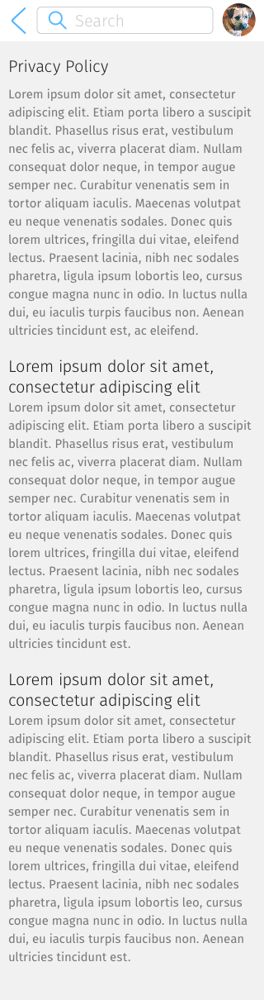
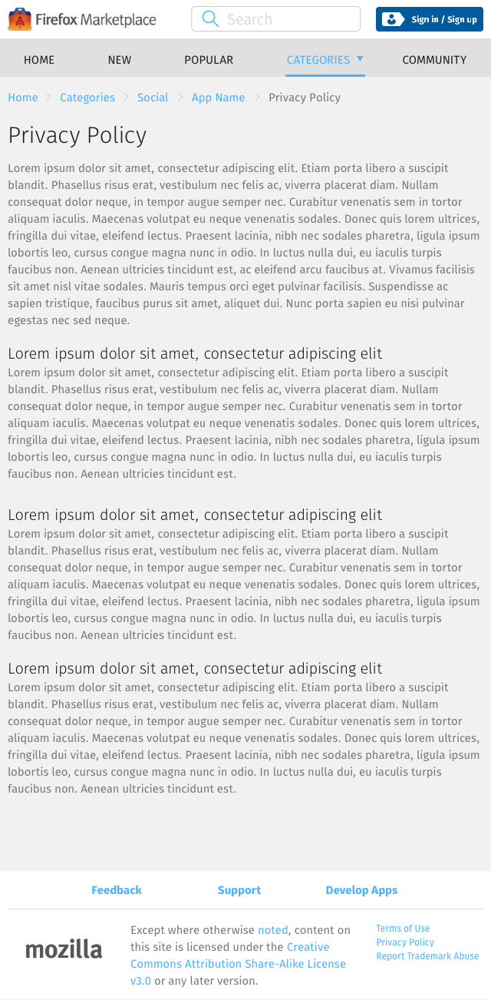

<div class="container">
	<div class="row">
		<div class="col-sm-12 col-md-12 col-lg-12">
			<h1>App Details &rarr; Privacy</h1>
			
      <p class="longText">Provides a way to see and read the app’s privacy policy.</p>
      
      <p class="longText">To access this page, tap the Privacy Policy button located under the Tools section of the <a href="app-details-page.html">App Details</a> page.</p>
      
      
      
      
       
      

		</div>
	</div>
	<!-- Pagination. If you have more than one page, set the multipage variable in the Frontmatter to true. Editing the pagination code happens in /_includes/homePagination.html.
		NOTE: This is currently broken in the Jekyll ver of this template.
		-->
		{% if page.multipage %}
			{% include homePagination.html %}
		{% endif %}
